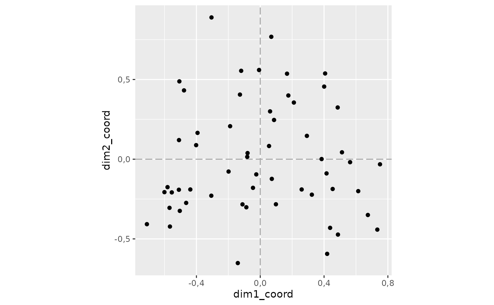
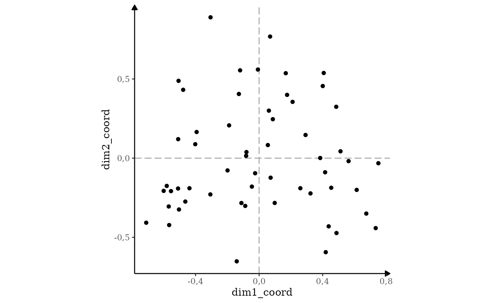
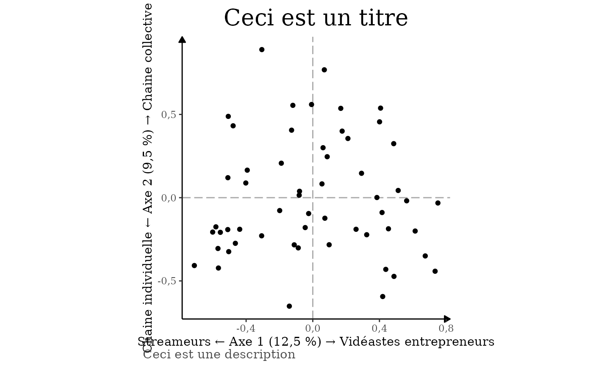

Cette vignette de présentation montre comment utiliser le package.
Avant toute chose, il faut configurer la session R. En effet, certains choix qui sont fait dans les options de R n’arrange pas beaucoup les chercheurs en sciences sociales. la fonction mise_en_place() permet de bien configurer R :
mise_en_place_ACM()
#>
#> ── Les options générales de la session R ont été modifié. ──
#>
#> ✔ Les nombres décimaux s'afficheront avec une virgule.
#> ✔ Ils n'afficheront que 3 chiffres après la virgule.
#> ✔ L'écriture scientifique a été désactivé.
#>
#>
#> ── Le thème des tableaux produit par gtsummary a été modifié. ──
#>
#>
#>
#> ✔ Ils s'afficheront en français.
#> ✔ En utilisant une virgule pour les nombres décimaux.Une fois que cela est fait, on peut continuer. Commencez par charger vos données dans R. Pour plus d’information sur comment faire, n’hésitez pas à consulter des guides.
Une fois que vos données sont chargées, avant tout ACM vous allez
pouvoir les inspectez. Pour les besoins de la démonstration je prendrais
en exemple un jeu de données que j’ai créé pour mon mémoire de M2 sur
les créateurs de contenus politiques. Il est inclus avec le package et
est stocké dans un objet qui s’appelle
createurs_de_contenus_pol.
createurs_de_contenus_pol
#> # A tibble: 56 × 24
#> personne titre orientation orientation2 debut visage_decouvert abonnes genre
#> <chr> <chr> <fct> <fct> <fct> <fct> <fct> <fct>
#> 1 Antoine … Anto… De gauche Progressiste 2015… Montre son visa… Entre … Homme
#> 2 Salomé S… BLAS… De gauche Progressiste 2020… Montre son visa… Plus d… Femme
#> 3 Benjamin… Bolc… De gauche Progressiste 2014… Montre son visa… Entre … Homme
#> 4 Aymric D… Cana… De gauche Progressiste 2015… Montre son visa… Entre … Homme
#> 5 Cassandr… Cass… De gauche Progressiste 2020… Montre son visa… 50k ab… Homme
#> 6 Pierre-Y… Cerc… De droite Conservateur 2015… Montre son visa… Entre … Homme
#> 7 Christop… Chri… De droite Conservateur 2014… Montre son visa… Entre … Homme
#> 8 Clément … Clém… De gauche Progressiste 2020… Montre son visa… Entre … Homme
#> 9 Charléli… DANY… De gauche Progressiste 2020… Montre son visa… Entre … Homme
#> 10 Julien G… Data… De gauche Progressiste 2014… Ne montre pas s… Entre … Homme
#> # ℹ 46 more rows
#> # ℹ 16 more variables: age <fct>, streamer_plein_temps <fct>, collectif <fct>,
#> # livre <fct>, podcast <fct>, twitter <fct>, facebook <fct>, instagram <fct>,
#> # tiktok <fct>, discord <fct>, twitch <fct>, site_perso <fct>, CNC <fct>,
#> # soutenir <fct>, partenariat_entreprise <fct>, autres_services <fct>Ce jeu de données se composent de plusieurs colonnes :
…
Avant de procéder à l’ACM, il est vraiment utile de sortir un tri à
plat de toute sa base de donnée. Pour cela, on peut utiliser la fonction
tbl_summary() du package gtsummary. N’oubliez
pas de retirer les variables qui ne se prêterait pas un tri à plat (dans
mon cas la variable personne et titre). Vous pouvez retirez des
variables en modifiant le paramètre include comme je le
fais plus bas.
createurs_de_contenus_pol |>
gtsummary::tbl_summary(
include = c(-personne, -titre)
# je retire la variable personne et la variable titre du tableau
)| Caractéristique | N = 561 |
|---|---|
| orientation | |
| Ne revendique pas d'appartenance | 14 (25%) |
| De gauche | 29 (52%) |
| De droite | 11 (20%) |
| Écologiste | 2 (3,6%) |
| orientation2 | |
| Divers | 9 (16%) |
| Progressiste | 29 (52%) |
| Conservateur | 18 (32%) |
| debut | |
| 2000 | 0 (0%) |
| 2014 et avant | 10 (18%) |
| 2015 - 2019 | 29 (52%) |
| 2020 et après | 17 (30%) |
| visage_decouvert | |
| Montre son visage | 52 (93%) |
| Ne montre pas son visage | 4 (7,1%) |
| abonnes | |
| 50k abonnés ou moins | 15 (27%) |
| Entre 50k et 200k abonnés | 13 (23%) |
| Entre 200k et 1 million d'abonnés | 23 (41%) |
| Plus d'un million d'abonnés | 5 (8,9%) |
| genre | |
| Femme | 8 (14%) |
| Homme | 48 (86%) |
| age | |
| 25 à 29 ans | 7 (13%) |
| 30 à 34 ans | 18 (32%) |
| 35 à 39 ans | 15 (27%) |
| 40 à 44 ans | 6 (11%) |
| 45 ans et plus | 10 (18%) |
| streamer_plein_temps | |
| Principalement streameur | 16 (29%) |
| Principalement youtuber | 40 (71%) |
| collectif | |
| Chaîne individuelle | 39 (70%) |
| Chaîne collective | 17 (30%) |
| livre | |
| Pas de publication de livre | 38 (68%) |
| Publication de livre | 18 (32%) |
| podcast | |
| Podcasts | 35 (63%) |
| Pas de podcasts | 21 (38%) |
| Compte Twitter | 50 (89%) |
| Pas de compte Twitter | 6 (11%) |
| Pas de compte Facebook | 29 (52%) |
| Compte Facebook | 27 (48%) |
| Compte Instagram | 47 (84%) |
| Pas de compte Instagram | 9 (16%) |
| tiktok | |
| Compte Tik Tok | 25 (45%) |
| Pas de compte Tik Tok | 31 (55%) |
| discord | |
| Serveur Discord | 10 (18%) |
| Pas de serveur Discord | 46 (82%) |
| twitch | |
| Compte Twitch | 34 (61%) |
| Pas de compte Twitch | 22 (39%) |
| site_perso | |
| Pas de site personnel | 31 (55%) |
| Site personnel | 25 (45%) |
| CNC | |
| Pas de subvention du CNC | 42 (75%) |
| Subvention du CNC | 14 (25%) |
| soutenir | |
| Ne demande pas de financement à l'audience | 13 (23%) |
| Demande de financement à l'audience | 43 (77%) |
| partenariat_entreprise | |
| Sponsorisé.e par des entreprises | 15 (27%) |
| Pas de sponsors d'entrerpises | 41 (73%) |
| autres_services | |
| Vend ses produits | 15 (27%) |
| Ne vend pas de produits | 41 (73%) |
| 1 n (%) | |
Vérifiez bien toutes vos variables et vos modalités. Si une modalité
concerne moins de 10 % de votre population, cela peut causé des
problèmes pour la suite. Il faudra alors sûrement la recoder/la passée
en variable supplémentaire. Dans mon cas par exemple : ma base ne compte
que 2 écologiste, ce qui est trop peu. Je peux donc soit recoder la
variable orientation (comme je l’ai fait avec
orientation2), soit la mettre en variable supplémentaire
lorsque je réaliserai l’ACM (c’est ce que je vais faire).
Pour réaliser l’ACM, utilisez la fonction… ACM()1. Vous
pouvez ensuite renseigner les variables à l’aide de l’argument
variables_supplementaires. Mettez-y les variables que vous
ne souhaitez pas voir participer à la construction des axes. Mettez-y
également les variables qui servent à identifier chacun de vos individus
(par exemple une variable nom_prenom ou dans mon cas, la
variable personne et titre).
Dans tbl_summary() vous vouliez inclure toutes les colonnes sauf les colonnes titre et personne. Ici, ce sont ces colonnes que vous sélectionnez comme variable supplémentaire, on ne met donc pas de moins devant leur nom :
resultat_acm <- createurs_de_contenus_pol |>
ACM(
variables_supplementaires = c(titre,
personne,
orientation,
orientation2)
)
#>
#> ── Variables actives ──
#>
#> L'ACM a été réalisé sur ces variables actives : `debut`, `visage_decouvert`,
#> `abonnes`, `genre`, `age`, `streamer_plein_temps`, `collectif`, `livre`,
#> `podcast`, `twitter`, `facebook`, `instagram`, `tiktok`, `discord`, `twitch`,
#> `site_perso`, `CNC`, `soutenir`, `partenariat_entreprise`, and
#> `autres_services`.
#>
#>
#> ── Variables supplémentaires ──
#>
#>
#>
#> Les variables supplémentaires sont les suivantes : `titre`, `personne`,
#> `orientation`, and `orientation2`.Vous pouvez explorer les résultats de l’ACM avec la fonction du
package explor : explor() .
explor::explor(resultat_acm)Si l’ACM vous convient, passez à la suite, sinon répétez les étapes décrites plus haut jusqu’à ce que le résultat de l’ACM soit satisfaisant pour vous.
Sur ces premiers graphiques, vérifiez que le nuage d’individu est bien équilibré et ne se résume pas à une seule droite. Si c’est le cas, il faut soit recoder votre base, soit penser à mettre les variables qui posent problèmes en variable supplémentaires.
Les résultats de cette opération sont stocké dans un objet (que j’ai
ici appelé resultat_acm). Il contient tous les résultats de
l’ACM. Mon package propose une manière de sortir ces résultats afin
qu’il soit prêt à être publié. La plupart des fonctions présentés par la
suite prendront comme premier argument cet objet contenant les résultats
pour extraire ceux que vous souhaitez affichez.
Les axes
La première chose que l’on souhaite en général savoir avec une ACM, c’est le taux de variance capturé par les axes. Une idée assez répandu voudrait qu’ils mesurent “l’information capturée” par chaque axe.
Pour afficher un tableau récapitulatif vous pouvez utiliser la
fonction extraire_variance() sur l’objet dans lequel vous
stockez les résultat de l’ACM :
extraire_variance(resultat_acm)
#> Axes Valeurs propres % de variance % cumulé de variance
#> 1 Axe 1 0,16 12,5 % 12,5 %
#> 2 Axe 2 0,12 9,5 % 21,9 %
#> 3 Axe 3 0,12 9,2 % 31,1 %
#> 4 Axe 4 0,09 7,2 % 38,4 %
#> 5 Axe 5 0,09 6,8 % 45,2 %
#> 6 Axe 6 0,08 6,5 % 51,7 %
#> 7 Axe 7 0,07 5,2 % 56,9 %
#> 8 Axe 8 0,06 4,9 % 61,8 %
#> 9 Axe 9 0,06 4,7 % 66,4 %
#> 10 Axe 10 0,06 4,4 % 70,8 %[insérer un commentaire des résultats + la fonction pour obtenir la variance modifié]
Une fois que cela est fait, on veut souvent chercher à décrire les
axes. Pour cela, utilisez la fonction caracteriser_axe().
Précisez le numéro de l’axe que vous voulez caractérisé avec l’argument
axe.
Par défaut, vous ne souhaiterez peut-être pas afficher toutes les
modalités dans ce tableau (surtout si vous en avez beaucoup). L’argument
contribution_minimum permet de préciser un seuil de
contribution minimum pour filtrer les modalités. Par défaut, il se règle
sur la contribution théorique moyenne, c’est-à-dire la contribution de
chaque variable si elles contribuaient chacunes également à la
construction des axes.
Ainsi quand on lance la fonction sans préciser l’argument
contribution_minimum :
resultat_acm |>
caracteriser_axe(axe = 1)
#> Vous n'axez pas indiqué de contribution minimum pour afficher les résultats
#> Seules les modalités dont la contribution est supérieur à la moyenne théorique
#> seront affichées.
#> ℹ Si vous souhaitez modifier cela, vous pouvez changer l'argument
#> contribution_minimum
#> → `contribution_minimum = 0` si vous souhaitez afficher toutes les modalités
#> par exemple
#>
#>
#> ── Contribution moyenne théorique
#>
#> ℹ Si toutes les modalités actives contribuaient également à la construction
#> d'un axe, chacune aurait une contribution de 2,17 %.| Modalité1 | Contribution | Coordonnée2 | Cos² | V-test | Effectif |
|---|---|---|---|---|---|
| Coordonnées positives | |||||
| Vend ses produits | 9,2 % | 1,06 | 0,41 | 4,75 | 15 (27 %) |
| Sponsorisé.e par des entreprises | 8 % | 0,98 | 0,35 | 4,41 | 15 (27 %) |
| Site personnel | 4,7 % | 0,59 | 0,28 | 3,91 | 25 (45 %) |
| 2014 et avant | 3,7 % | 0,82 | 0,15 | 2,84 | 10 (18 %) |
| Plus d'un million d'abonnés | 3,4 % | 1,11 | 0,12 | 2,57 | 5 (9 %) |
| Pas de compte Twitch | 3,4 % | 0,53 | 0,18 | 3,15 | 22 (39 %) |
| Compte Facebook | 3,1 % | 0,46 | 0,20 | 3,29 | 27 (48 %) |
| Principalement youtuber | 3 % | 0,37 | 0,35 | 4,36 | 40 (71 %) |
| Ne demande pas de financement à l'audience | 2,9 % | 0,64 | 0,12 | 2,60 | 13 (23 %) |
| Pas de podcasts | 2,6 % | 0,48 | 0,14 | 2,73 | 21 (38 %) |
| Coordonnées négatives | |||||
| 50k abonnés ou moins | 8,6 % | -1,02 | 0,38 | -4,57 | 15 (27 %) |
| Principalement streameur | 7,6 % | -0,93 | 0,35 | -4,36 | 16 (29 %) |
| Subvention du CNC | 3,8 % | -0,71 | 0,17 | -3,02 | 14 (25 %) |
| Pas de site personnel | 3,8 % | -0,47 | 0,28 | -3,91 | 31 (55 %) |
| Ne vend pas de produits | 3,4 % | -0,39 | 0,41 | -4,75 | 41 (73 %) |
| Pas de compte Facebook | 2,9 % | -0,43 | 0,20 | -3,29 | 29 (52 %) |
| Pas de sponsors d'entrerpises | 2,9 % | -0,36 | 0,35 | -4,41 | 41 (73 %) |
| 2020 et après | 2,4 % | -0,51 | 0,11 | -2,50 | 17 (30 %) |
| Compte Twitch | 2,2 % | -0,34 | 0,18 | -3,15 | 34 (61 %) |
| 1 Seules les modalités actives dont la contribution est supérieure à 2,17 % sont représentées. | |||||
| 2 Moyenne des coordonnées des individus partageant la modalité | |||||
Si cela ne vous convient et que vous préféreriez un tableau plus synthétique ou plus exhaustif, vous pouvez changer ce seuil :
caracteriser_axe(resultat_acm, axe = 1, contribution_minimum = 4.5)| Modalité1 | Contribution | Coordonnée2 | Cos² | V-test | Effectif |
|---|---|---|---|---|---|
| Coordonnées positives | |||||
| Vend ses produits | 9,2 % | 1,06 | 0,41 | 4,75 | 15 (27 %) |
| Sponsorisé.e par des entreprises | 8 % | 0,98 | 0,35 | 4,41 | 15 (27 %) |
| Site personnel | 4,7 % | 0,59 | 0,28 | 3,91 | 25 (45 %) |
| Coordonnées négatives | |||||
| 50k abonnés ou moins | 8,6 % | -1,02 | 0,38 | -4,57 | 15 (27 %) |
| Principalement streameur | 7,6 % | -0,93 | 0,35 | -4,36 | 16 (29 %) |
| 1 Seules les modalités actives dont la contribution est supérieure à 4,5 % sont représentées. | |||||
| 2 Moyenne des coordonnées des individus partageant la modalité | |||||
Pour caractériser l’axe 2, on peut copier et coller le même code en changeant simplement le numéro de l’axe que l’on souhaite décrire :
caracteriser_axe(resultat_acm, axe = 2, contribution_minimum = 4.5)| Modalité1 | Contribution | Coordonnée2 | Cos² | V-test | Effectif |
|---|---|---|---|---|---|
| Coordonnées positives | |||||
| Chaîne collective | 10,7 % | 0,93 | 0,38 | 4,56 | 17 (30 %) |
| Ne montre pas son visage | 10 % | 1,85 | 0,26 | 3,81 | 4 (7 %) |
| Subvention du CNC | 6,4 % | 0,80 | 0,21 | 3,41 | 14 (25 %) |
| Compte Facebook | 5,9 % | 0,55 | 0,28 | 3,94 | 27 (48 %) |
| 40 à 44 ans | 5,1 % | 1,08 | 0,14 | 2,79 | 6 (11 %) |
| Coordonnées négatives | |||||
| Vend ses produits | 6,1 % | -0,75 | 0,21 | -3,36 | 15 (27 %) |
| Pas de compte Facebook | 5,5 % | -0,51 | 0,28 | -3,94 | 29 (52 %) |
| Chaîne individuelle | 4,7 % | -0,41 | 0,38 | -4,56 | 39 (70 %) |
| Femme | 4,6 % | -0,89 | 0,13 | -2,71 | 8 (14 %) |
| 1 Seules les modalités actives dont la contribution est supérieure à 4,5 % sont représentées. | |||||
| 2 Moyenne des coordonnées des individus partageant la modalité | |||||
Visualiser les résultats
Pour visualiser les résultats. Le plus simple restera toujours de faire appel à explor::explor(). Les résultats ne sont cependant pas très joli à mon goût. La section suivante s’adresse donc à
Ceux qui souhaite avoir des visualisations de leur données plus esthétiques.
Les utilisateurs avancés et moins avancés qui veulent avoir un plus grand contrôle sur les visualisations.
Toutes ces visualisations se basent sur le package ggplot. Jusqu’à
maintenant on utilisait directement les résultats de l’ACM pour sortir
nos tableaux. Ici, il va falloir les transformer un petit peu. Nous
allons donc créer deux objets, un premier objet resultat_individus qui
contiendra les coordonnées des individus ainsi que nos données initales
et un deuxième objet (que je nomme ici resultat_modalites) qui
répertorie les résultats par modalité. Pour extraire ces résultats du
résultat de l’ACM, on aura recours à la fonction
extraire_individus() et
extraire_modalites().
Pour extraire_modalites il suffit de faire passer le resultat de l’ACM à la fonction :
resultat_modalites <- resultat_acm |> extraire_modalites()
resultat_modalites
#> # A tibble: 189 × 21
#> type variables modalites n pourcentage dim1_coord dim1_cos2 dim1_vtest
#> <chr> <chr> <chr> <int> <dbl> <dbl> <dbl> <dbl>
#> 1 variab… debut 2014 et … 10 17.9 0.82 0.15 2.84
#> 2 variab… debut 2015 - 2… 29 51.8 0.02 0 0.12
#> 3 variab… debut 2020 et … 17 30.4 -0.51 0.11 -2.5
#> 4 variab… visage_d… Montre s… 52 92.9 0 0 -0.05
#> 5 variab… visage_d… Ne montr… 4 7.1 0.03 0 0.05
#> 6 variab… abonnes 50k abon… 15 26.8 -1.02 0.38 -4.57
#> 7 variab… abonnes Entre 50… 13 23.2 0.09 0 0.37
#> 8 variab… abonnes Entre 20… 23 41.1 0.37 0.1 2.31
#> 9 variab… abonnes Plus d'u… 5 8.9 1.11 0.12 2.57
#> 10 variab… genre Femme 8 14.3 -0.6 0.06 -1.81
#> # ℹ 179 more rows
#> # ℹ 13 more variables: dim1_contrib <dbl>, dim2_coord <dbl>, dim2_cos2 <dbl>,
#> # dim2_vtest <dbl>, dim2_contrib <dbl>, dim3_coord <dbl>, dim3_cos2 <dbl>,
#> # dim3_vtest <dbl>, dim3_contrib <dbl>, dim4_coord <dbl>, dim4_cos2 <dbl>,
#> # dim4_vtest <dbl>, dim4_contrib <dbl>On obtient alors un tableau qui reprend pour chaque modalité et chaque axe leur coordonnée, leur cos², leur vtest et leur contribution.
Pour extraire_individu() il faut préciser le nom d’une
de vos variables qui permettent d’identifier chaque individus. Dans mon
cas par exemple, ma base de donnée recense des chaînes YouTube et
Twitch, chaque individu a un titre de chaîne unique. Ce
sera donc titre :
resultat_individus <- resultat_acm |>
extraire_individus(nom_variable_individu = "titre")
#> Joining with `by = join_by(titre)`
resultat_individus
#> # A tibble: 68 × 44
#> modalites dim1_coord dim1_cos2 dim1_vtest dim2_coord dim2_cos2 dim2_vtest
#> <chr> <dbl> <dbl> <dbl> <dbl> <dbl> <dbl>
#> 1 Antoine Goya -0.28 0 -0.28 -0.81 0.01 -0.81
#> 2 Christopher … 1.03 0.02 1.03 -0.25 0 -0.25
#> 3 Clément Vikt… 0.15 0 0.15 0.86 0.01 0.86
#> 4 Glupatate -0.32 0 -0.32 1.16 0.02 1.16
#> 5 Jean Massiet -1.26 0.03 -1.26 1.39 0.04 1.39
#> 6 Moufette -1.76 0.06 -1.76 -1.16 0.02 -1.16
#> 7 Pascal Bonif… 1.4 0.04 1.4 -0.05 0 -0.05
#> 8 Samuel Etien… -0.2 0 -0.2 0.11 0 0.11
#> 9 Stéphane Edo… 1.86 0.06 1.86 -0.09 0 -0.09
#> 10 Victor Ferry 1.21 0.03 1.21 -1.35 0.03 -1.35
#> # ℹ 58 more rows
#> # ℹ 37 more variables: dim3_coord <dbl>, dim3_cos2 <dbl>, dim3_vtest <dbl>,
#> # dim4_coord <dbl>, dim4_cos2 <dbl>, dim4_vtest <dbl>, personne <chr>,
#> # orientation <chr>, orientation2 <chr>, debut <chr>, visage_decouvert <chr>,
#> # abonnes <chr>, genre <chr>, age <chr>, streamer_plein_temps <chr>,
#> # collectif <chr>, livre <chr>, podcast <chr>, twitter <chr>, facebook <chr>,
#> # instagram <chr>, tiktok <chr>, discord <chr>, twitch <chr>, …On retrouve donc le tableau de données que l’on a donné à manger à la fonction ACM() qui a été augmenté de nouvelles colonnes avec notamment les coordonnées des individus.
Le nuage d’individu
Pour faire apparaître le nuage d’individu. Il suffit maintenant
d’utiliser les fonctions de ggplot, avec quelques subtilités cependant.
Pour ceux qui ne souhaitent pas s’embarrasser des subtilités2, utilisez
juste ggacm() à la place vous gagnerez du temps.
library(ggplot2)
resultat_individus |>
ggacm() +
geom_point()
Il est possible d’améliorer ce graphique de plusieurs manières.
Premièrement en modifiant le thème de ggplot, pour qu’il soit plus joli.
Le thème theme_acm() qui vient avec le package illustre mes
préférences personnelles.
resultat_individus |>
ggacm() +
geom_point() +
theme_acm()
Pour éviter de toujours taper + theme_acm(), je vous
conseille d’en faire le theme par défaut de votre session R. Cela
restera le thème par défaut jusqu’à ce que vous redémarriez R.
Ensuite, il est possible de nommer les axes. Pour cela, la fonction
nommer_axes() permet de définir des noms d’axes appropriés.
Il suffit de la rajouter au graphique. Elle prend comme premier argument
le resultat entier de l’ACM. Si on ne précise rien, les axes sont juste
modifié de la manière suivante
resultat_individus |>
ggacm() +
geom_point() +
nommer_axes(resultat_acm)Vous pouvez précisez au bout des flèches pour aider à l’interprétation du graphique. Pour cela, n’hésitez pas à vous aider des tableaux que vous avez sortis avec caracteriser_axe(). Les modalités au coordonnées négatives pour l’axe 1 sont à gauche, et celles qui sont positives à droite. Pour l’axe 2, les coordonnées négatives sont en bas et les coordonnées positives en haut. Dans mon cas, on peut donner les interprétations suivantes :
resultat_individus |>
ggacm() +
geom_point() +
nommer_axes(resultat_acm,
a_gauche = "Streameurs",
a_droite = "Vidéastes entrepreneurs",
en_bas = "Chaine individuelle",
en_haut = "Chaine collective")
Ca fait beaucoup de choses à taper à chaque fois… n’hésitez donc pas à stocker ces axes dans un objet pour y avoir recours plus facilement :
axes <- resultat_acm |>
nommer_axes(
a_gauche = "Streameurs",
a_droite = "Vidéastes entrepreneurs",
en_bas = "Chaine individuelle",
en_haut = "Chaine collective"
)Vous pouvez maintenant ressortir le graphique :
resultat_individus |>
ggacm() +
geom_point() +
axes
Enfin, peut-être souhaiteriez vous ajouter un titre ou une
description ? Dans ce cas-là, utilisez la fonction labs()
de ggplot.
resultat_individus |>
ggacm() +
geom_point() +
axes +
labs(
title = "Ceci est un titre",
caption = "Ceci est une description"
)